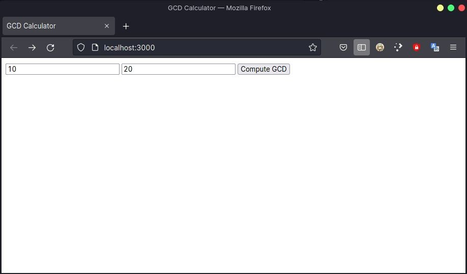
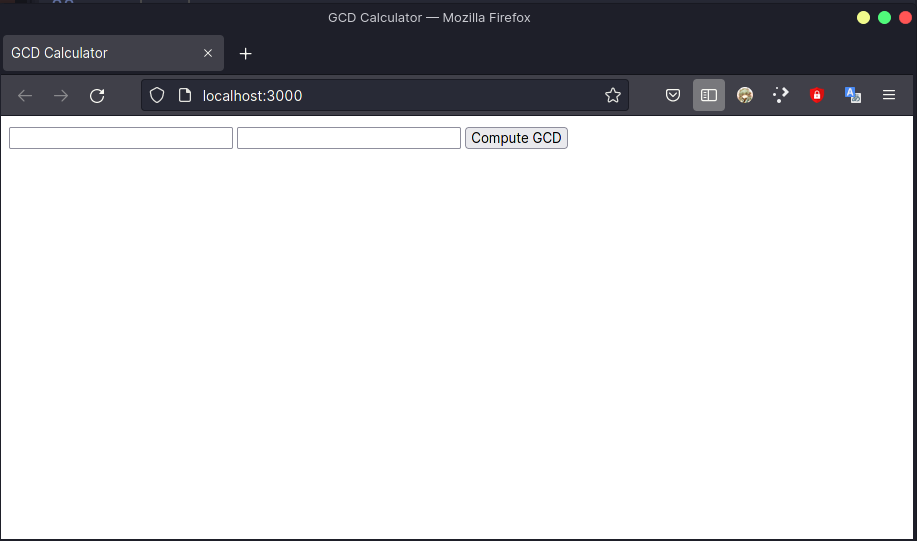
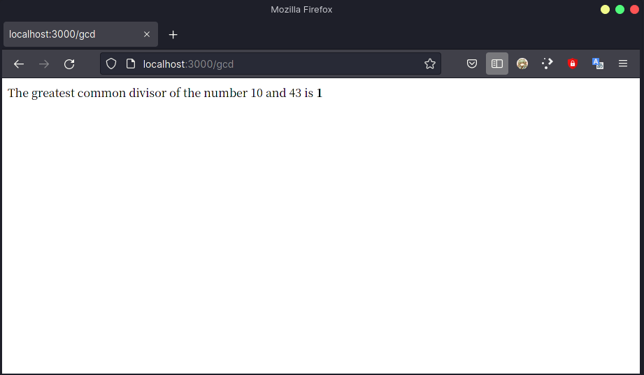
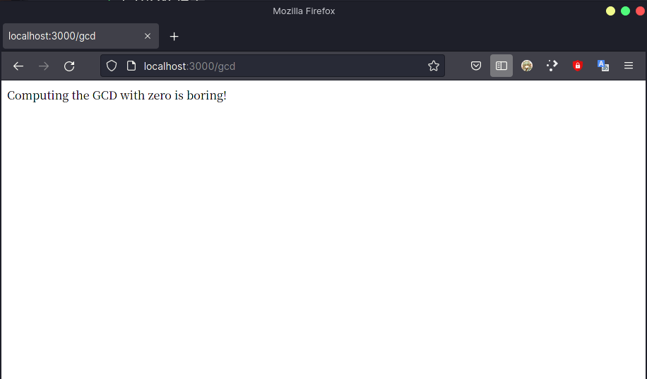
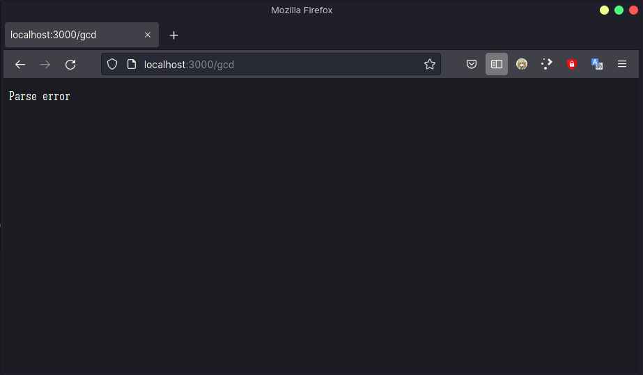

Rust 学习 04
archive time: 2021-12-16
还是决定看书, 因为进度可以自己掌控...
呈现网页
之前刚讲完 函数, 现在就直接来写一个小样例吧
使用 cargo 来新建项目
cargo new [--bin] actix-gcd
这里 方括号
[]括起来的部分是可选部分, 默认创建的就是应用项目, 故不需要特别指定
创建好后的目录结构是这样的
actix-gcd/
├── Cargo.toml
└── src
└── main.rs
由于要显示网页, 我们从头写起是不太现实的, 可以选择使用别人写好的库，但是在使用之前, 我们需要在 Cargo.toml 里指定好，
这个 Cargo.toml 就是管理我们整个项目的 配置文件, 而我们的代码都组织在 src 文件夹下
Cargo.toml
刚创建好的 Rust 项目里, Cargo.toml 的内容大致如下
[package]
name = "actix-gcd"
version = "0.1.0"
edition = "2021"
# See more keys and their definitions at https://doc.rust-lang.org/cargo/reference/manifest.html
[dependencies]
而我们要使用别人写好的库, 也就是需要依赖别人的库, 所以需要在 [dependencies] 这一项底下写好你需要的库 以及版本
这里, 我们会用到哦 actix-web 和 serde 这两个库, 写好后内容如下
# 上面部分不变
[dependencies]
actix-web = "3.3.2"
serde = { version = "1.0", features = ["derive"] }
至于版本和库, 可以在 Docs.rs 这个网站上查询到
写好 Cargo.toml 后, 我们在项目的根目录下 (actix-gcd/) 使用
cargo build
这个指令, 来预先下载一下所需要的库, 这样 cargo 就会去 crates.io 这个网站去下载所需要的库以及库所需要的依赖
main.rs
处理好所需要的库之后, 我们可以开始写我们的代码了
如上文所言, 我们的代码都组织在 src/ 目录下, 而主要的文件就是 main.rs
use actix_web::{web, App, HttpResponse, HttpServer};
#[actix_web::main]
async fn main() -> std::io::Result<()> {
let server = HttpServer::new(|| App::new().route("/", web::get().to(get_index)));
println!("Serving on http://localhost:3000...");
server.bind("127.0.0.1:3000")?.run().await
}
fn get_index() -> HttpResponse {
HttpResponse::Ok().content_type("text/html").body(
r#"
<title>GCD Calculator</title>
<form action="/gcd" method="post">
<input type="text" name="n">
<input type="text" name="m">
<button type="submit">Compute GCD</button>
</form>
"#,
)
}处理好后, 我们在 localhost:3000 就可以看见这个页面

可以看见, 我们这个 main 函数有点不一样
通常的 main 函数就是直接一个 fn main() { ... }, 而这个却是 async fn main() -> std::io::Result<()> { ... }
这个返回值类型 std::io::Result 还是可以理解的, 就是一个枚举类, 没问题就返回值本身, 有错误就返回错误,
而这里的 <()> 则是泛型的写法, 表示这个返回值是一个 io 操作的 Result
而且这个 main 函数上还有个 #[actix_web::main], 这个是一种 宏 (macro),
对应的是 属性宏 (Attribute-like macros), 这个宏使得我们的 main 函数可以是 async 的
main 函数里第一句 let 声明了一个不可变的变量, 他是 HttpServer 类型的, 就相当于我们用于处理响应的服务器了
HttpServer::new() 一句使用 new 这一个函数返回了一个 HttpServer 类型的对象(?不知这个说法对不对)，
这里的 new() 算是约定, 并不像其他语言的 new 关键字, 是规定好的, 你可以选择其他名字如 init() 来实现这个功能
new() 里面传递了一个 闭包 (Closure) 作为参数
闭包的基本格式是
| ... | {
...
}|| 里表示被捕获的变量, 后面的 {} 里表示相关操作
这里我们没有捕获任何变量, 直接执行 {} 里的内容, 即使用 App::new() 来生成一个 actix_web::App 类型的对象，
使用 App 里的 route 函数配置路由
这个函数的类型是
pub fn route(self, path: &str, route: Route) -> Self可见需要我们传递两个参数, 第一个参数是一个字符串引用, 即对应路径, 第二个参数就是 route, 即需要配置的路由
这里我们要把一个路由配置到网站根目录 (/), 而路由是由 get_index 函数配合 web::get().to() 得到
之后是一段提示性质的输出, 下面, 我们使用创建好的这个 HttpServer 使用 bind() 函数来说明要绑定的 套接字 (socket) 地址，
后面的 ? 这个符号表示 Error propagation 即将 bind 返回得到的错误传递给调用的函数, 而不是在当前位置就处理，
算是一种偷懒的方式, 这也是我们返回的 Result<()>
绑定好地址后就可以启动服务器了, run() 函数启动服务器, 返回一个 Server 类型的值，
而 .await 说明这个 Server 是以 await 的方式执行的
get_index
在 get_index 函数里, 我们通过 HttpResponse::Ok() 来返回一个 HttpResponse 并以此来返回需要的 route，
而随后的 content_type()等内容就是纯属 HTML 的内容了
GCD 部分
完成上述操作只能够显示一个网页, 而我们点 Compute GCD 按钮是不会得到正确反应的, 我们还需要继续完善
在 src/main.rs 文件的头部使用 use serde::Deserialize; 导入 serde 库里我们需要的部分
之后, 我们需要定义我们按下按钮后返回的类型, 以便我们解析, 这里我们使用 struct
#[derive(Deserialize)]
struct GcdParameters {
n: u64,
m: u64,
}将 #[derive(Deserialize)] 属性放在类型定义上方告诉 serde 在编译程序时检查类型，
并自动生成代码以从 HTML 表单用于 POST 请求的格式的数据中解析此类型的值,
也就是会自动将返回的值表示为我们定义的这个类型的形式
我们还需要定义相关响应
fn post_gcd(form: web::Form<GcdParameters>) -> HttpResponse {
if form.n == 0 || form.n == 0 {
return HttpResponse::BadRequest()
.content_type("text/html")
.body("Computing the GCD with zero is boring!");
}
let response = format!(
"The greatest common divisor of the number {} and {} is <b>{}</b>\n",
form.n,
form.m,
gcd(form.n, form.m)
);
HttpResponse::Ok().content_type("text/html").body(response)
}这里就是从表单中得到 GcdParameters 类型, 返回一个响应, 先对输入进行检查,
如果输入含有 0 则显示 Computing the GCD with zero is boring! 这句话, 否则就计算 gcd 并返回
而计算 gcd 的方法就是常用的辗转相除法
fn gcd(mut m: u64, mut n: u64) -> u64 {
assert!(m != 0 && n != 0);
while m != 0 {
if m < n {
let t = m;
m = n;
n = t;
}
m = m % n;
}
n
}之后, 我们还需要修改路由的配置, 将对 /gcd 的响应配置好, 将原来的 server 定义修改为:
let server = HttpServer::new(|| {
App::new()
.route("/", web::get().to(get_index))
.route("/gcd", web::post().to(post_gcd))
});这样我们就可以正常使用了
结果展示
cargo run 后, 我们访问 http://localhost:3000, 就可以得到一个这样的界面

分别测试一下, 先是正常输入

然后是含有 0 的输入

最后是含有非整数的输入

想要结束我们的这个服务器, 直接使用 Ctrl+C 即可
这个例子是比较难且比较贴近实际的例子, 值得好好看看
书里的库使用的是 1.x 的版本, 而我使用的是 3.3.2 版本, 部分写法和书上不一致, 需要注意